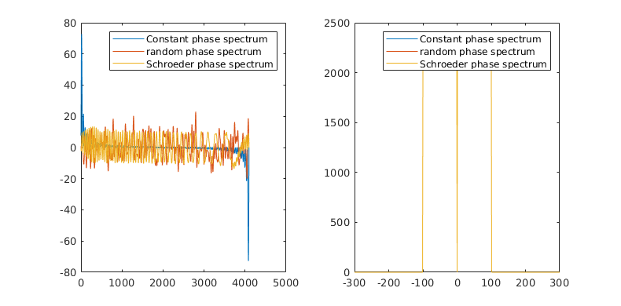
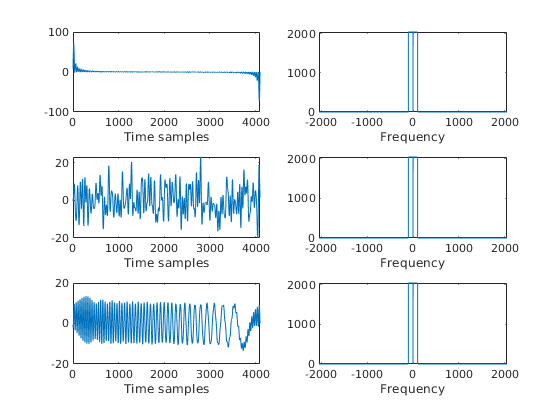
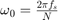
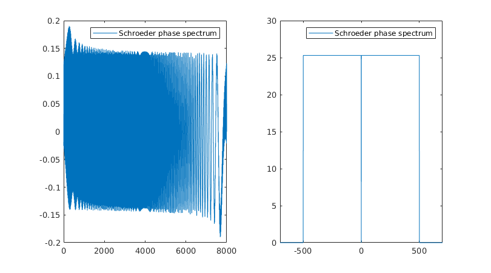

clear; close all;clc;
Measuring transfer functions
% Generation of multisine signals. t = 1:4096; % Time K_max = 100; K = 1:K_max; % Number of excited spectral lines % Constant phase multisine phi = 0; multisine = sum(sin(2*pi*t'*K/length(t) + phi),2); % Random phase mutlisine phi = 2*pi*rand([1,K_max]); multisine_rand = sum(sin(2*pi*t'*K/length(t) + phi),2); % Schroeder phase phi = K.*(K+1)*pi/length(K); multisine_schro = sum(sin(2*pi*t'*K/length(t) + phi),2); % Crest factor % Crest factor - constant phase multisine crestFact = max(multisine)/rms(multisine); % Crest factor - random phase mutlisine crestFact_rand = max(multisine_rand)/rms(multisine_rand); % Crest factor - Schroeder phase mutlisine crestFact_schro = max(multisine_schro)/rms(multisine_schro); disp('Crest factors: '); disp(join(['Constant phase multisine: ',num2str(crestFact)])); disp(join(['Random phase multisine: ',num2str(crestFact_rand)])); disp(join(['Schroeder phase multisine: ',num2str(crestFact_schro)])); % FFTs % FFT - constant phase multisine fft_const = fftshift(fft(multisine)); % FFT - random phase multisine fft_rand = fftshift(fft(multisine_rand)); % FFT - Schroeder phase multisine fft_schro = fftshift(fft(multisine_schro)); % Plots fq = -length(t)/2:length(t)/2 -1; figure('Position',[500 500 800 420]);hold on; subplot(1,2,1) plot(t',multisine',t',multisine_rand,t',multisine_schro); legend('Constant phase spectrum','random phase spectrum','Schroeder phase spectrum'); subplot(1,2,2) plot(fq,abs(fft_const),fq,abs(fft_rand),fq,abs(fft_schro)); xlim([-300 300]); legend('Constant phase spectrum','random phase spectrum','Schroeder phase spectrum'); figure;hold on; subplot(3,2,1); plot(t',multisine'); xlabel('Time samples'); subplot(3,2,3); plot(t',multisine_rand'); xlabel('Time samples'); subplot(3,2,5); plot(t',multisine_schro'); xlabel('Time samples'); subplot(3,2,2); plot(fq,abs(fft_const)); xlabel('Frequency'); subplot(3,2,4); plot(fq,abs(fft_rand)); xlabel('Frequency'); subplot(3,2,6); plot(fq,abs(fft_schro)); xlabel('Frequency');
Crest factors: Constant phase multisine: 10.2979 Random phase multisine: 3.2418 Schroeder phase multisine: 1.908 
DUT measurements
% DUT parameters bandwidth = 500; fs = 8e3; % Sampling frequency % Generation of the multisine

N = fs; t = 1:N; K_max = 500; K = 1:K_max; % Number of excited spectral lines % Schroeder phase phi = K.*(K+1)*pi/length(K); u_sch_500 = sum(sin(2*pi*t'*K/length(t) + phi),2); u_sch_500 = 0.1*u_sch_500/rms(u_sch_500); % FFT fft_u_sch_500 = fftshift(fft(u_sch_500)); % Plots figure('Position',[500 500 800 420]);hold on; subplot(1,2,1) plot(t',u_sch_500); legend('Schroeder phase spectrum'); fq = -length(t)/2:length(t)/2 -1; subplot(1,2,2) plot(fq,abs(fft_u_sch_500)); xlim([-700 700]); legend('Schroeder phase spectrum'); % Save the input signal save('Group9_Input1.mat','u_sch_500');
Excitation signals
% Periodic % Constant phase multisine phi = 2*pi*0; multisine_const = sum(sin(2*pi*t'*K/length(t) + phi),2); multisine_const = 0.1*multisine_const/rms(multisine_const); % Random phase mutlisine phi = 2*pi*rand([1,K_max]); multisine_rand = sum(sin(2*pi*t'*K/length(t) + phi),2); multisine_rand = 0.1*multisine_const/rms(multisine_rand); % Periodic noise signal d = 80; period = N/d; noise_per = randn([period,1]); noise_per = repmat(noise_per,d); noise_per = 0.1*noise_per/rms(noise_per); % Aperiodic